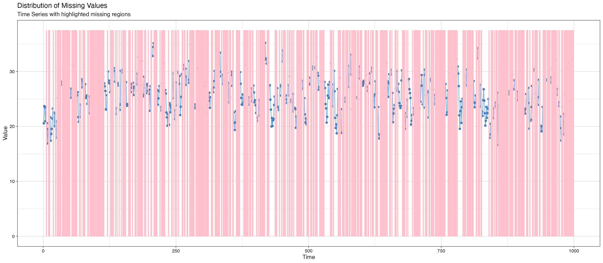

Introduction
We start with a simple case, where we use
data_stationary included in our package, which is generated
with the following data generation process: \[
Y_t = 40+0.5Y_{t-1}-1.5X_t-0.5X_{t-1}-C_t+v_t, v_t \sim \text{i.i.d
}\mathcal{N}(0,1)
\]
Generate Missing Index
Then using the function generate.missing_index()
provided in our package, we create a MNAR missing index, and create the
columns for corresponding lagged outcomes.
data = data_stationary#using data_stationary
index_MNAR = generate.missing_index(type = "MNAR",
n=length(data$y),
param = list(data = data.frame(y=data$y,x=data$x),
MNAR.type = "increasing",
coeff = c(0.1,-0.3,0),
MNAR.drawplot = c(TRUE, "y"))
)$missing_index
#> The missing indicators for MNAR 'increasing' are generated!#> The missing rate for MNAR is 0.46
data$y[index_MNAR] = NA
data$y_1 = c(NA,data$y[1:999])
data$x_1 = c(NA,data$x[1:999])
data$c_1 = c(NA,data$c[1:999])
data = data[c(2:1000),]
data_space_SSMimpute = data
kable(head(data_space_SSMimpute))| Date | y | x | c | y_1 | x_1 | c_1 | |
|---|---|---|---|---|---|---|---|
| 2 | 2020-02-07 | NA | 10.73859 | 8.716357 | 23.43100 | 9.859805 | 7.950641 |
| 3 | 2020-02-08 | NA | 10.24018 | 7.791593 | NA | 10.738591 | 8.716357 |
| 4 | 2020-02-09 | 23.46471 | 11.26975 | 5.322497 | NA | 10.240184 | 7.791593 |
| 5 | 2020-02-10 | 20.95864 | 10.66030 | 7.306048 | 23.46471 | 11.269747 | 5.322497 |
| 6 | 2020-02-11 | 23.51839 | 10.56685 | 7.330904 | 20.95864 | 10.660300 | 7.306048 |
| 7 | 2020-02-12 | 22.40664 | 11.38117 | 6.250145 | 23.51839 | 10.566847 | 7.330904 |
imputeTS::ggplot_na_distribution(data_space_SSMimpute$y, color_missing = "pink",color_missing_border = "pink", alpha_missing = 0.1) # Start Imputation
Based on our prior knowledge(usually we need an additional step for
data exploration, see: exploration of state-space model for a detailed
introduction), we set up the formula and all the learning parameter in
ss_param and cpt_learning_param
formula="y~y_1+x+x_1+c"
formula_var=unlist(strsplit(unlist(strsplit(formula,"~"))[2],"+",fixed=T))
ss_param=list(inits=c(log(0.25),log(1)),m0=c(40,0.1,-0.1,-0.1,-1),C0=diag(rep(10^3),5), AR1_coeffi=NULL,rw_coeffi="intercept", v_cp_param=NULL, w_cp_param=NULL,max_iteration=100)
result_SSMimpute1=SSMimpute_unanimous_cpts(data_ss_ori=data_space_SSMimpute,formula_var,ss_param_temp=ss_param,
initial_imputation_option="StructTS",
estimate_convergence_cri=0.01,
lik_convergence_cri=0.01,
stepsize_for_newpart=1/3,
max_iteration=100,
cpt_learning_param=list(cpt_method="mean",burnin=1/10,mergeband=20,convergence_cri=10),
cpt_initial_guess_option="ignore",
dlm_option="smooth",m=5,seed=1,printFlag=F)Analysis of Result
Now we take a close look at the result generated from
SSMimpute_unanimous_cpts()
Estimated coefficient:
#kable(result_statespace_SSMimpute1$result_convergence)
#kable(result_statespace_SSMimpute1$result_convergence_mp)
kable(result_SSMimpute1$result_convergence_mp_addV)| Estimate | Std.Error | |
|---|---|---|
| (Intercept) | 41.8260426 | 1.5690795 |
| y_1 | 0.4607595 | 0.0256214 |
| x | -1.4920563 | 0.0625198 |
| x_1 | -0.5985293 | 0.0901322 |
| c | -0.9763831 | 0.0530130 |
We can see SSMimpute_unanimous_cpts() successfully
uncover the data generating process.
We also plot the imputed missing value versus the ground truth:
#result_statespace_SSMimpute1$estimated_cpts
data_na = result_SSMimpute1$data_temp
length(data_na$y_1)
#> [1] 999
data_temp = result_SSMimpute1$data_temp
missing_part=which(is.na(data_temp$y))[which(is.na(data_temp$y))<nrow(data_temp)]
data_temp$y_1[missing_part+1]=result_SSMimpute1$y_final
#imputeTS::ggplot_na_distribution(data_stationary$y[1:999], color_missing = "pink",color_missing_border = "pink", alpha_missing = 0.9)
imputeTS::ggplot_na_imputations(x_with_na = data_space_SSMimpute$y_1, x_with_imputations = data_na$y_1,x_with_truth = data_stationary$y[1:999])